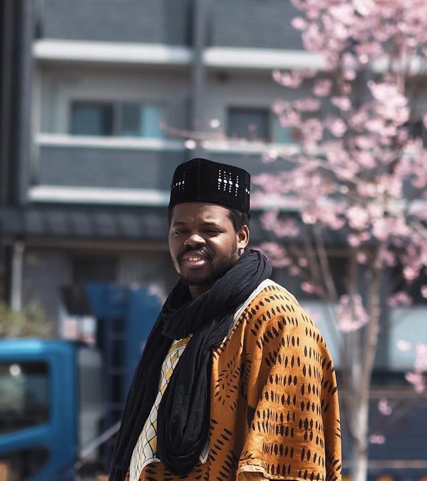

Hello, I'm
|
إِنَّ فِي خَلْقِ السَّمَاوَاتِ وَالْأَرْضِ وَاخْتِلَافِ اللَّيْلِ وَالنَّهَارِ لَآيَاتٍ لِّأُولِي الْأَلْبَابِ
SAKAI-KU, SAKAI-SHI, OSAKA · aboulhcisse@gmail.com
Whether it's a research collaboration, a project idea, or just a hello — I'd love to hear from you.